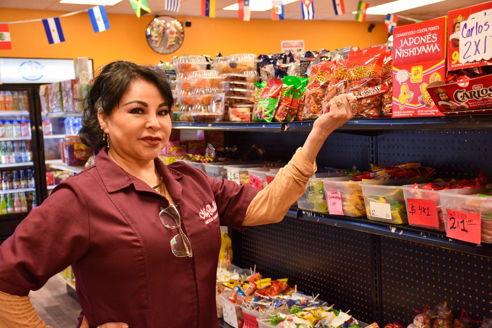

Sample made by Michael Goss Imaging, not your live site.

My Pueblito
A Mexican market and taqueria in Suite D at 11 2nd Avenue East, Dickinson, North Dakota.
Call (701) 300-1190
The market
Erika Vasquez and Raul Guerrero opened My Pueblito in Dickinson in 2020. It started when Erika’s sister asked her to bring hibiscus tea and a few other things that were hard to find in town.
The products are from Mexico. The shop is now in a larger space, Suite D at 11 2nd Avenue East.
The taqueria
People asked for food within the first months. It began as a cart. It is now a food trailer, with a dining room inside the shop.
See the shelves